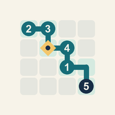

Офлайн-головоломка для Android
Небольшой путь.
Точная сумма.
Проведите маршрут по числам, соберите ключи и доберитесь до финиша. Правильных путей может быть несколько — найдите свой.

Как играть
- Начните с клетки S. Её число уже входит в сумму.
- Нажимайте соседнюю клетку: вверх, вниз, влево или вправо. Каждую клетку можно посетить один раз.
- Соберите все отмеченные ключи ◆ и придите в F с точной целевой суммой. Число финиша тоже учитывается.
- Можно оставить часть поля неиспользованной. Любой маршрут по этим правилам засчитывается.
«Назад» отменяет один шаг; «Заново» очищает маршрут на том же поле. Пошаговое обучение объясняет правила на небольшой задаче. Поля 4 × 4 и 5 × 5, три ступени сложности и задача дня работают без интернета.
Сохранение и поддержка
Текущий маршрут и число решённых задач сохраняются на устройстве. Аккаунта, облачной синхронизации и таймера с наказанием нет. Для рекламы при наличии сети используется баннер РСЯ, отделённый от поля и кнопок.
По вопросам работы приложения: jonkryl@gmail.com. Укажите версию приложения и что произошло; личные данные не нужны.
Offline Android puzzle
A small route.
An exact sum.
Build a route through numbers, collect the keys and reach the finish. A puzzle can have several winning routes — find your own.
How to play
- Start at S. Its number is already part of your sum.
- Tap a neighbouring cell: up, down, left or right. Visit each cell at most once.
- Collect every ◆ key and reach F with the exact target sum. The finish value also counts.
- You can leave other cells unused. Any route following these rules wins.
Undo removes one step; Restart clears the route on the same board. A guided first puzzle explains the rules. The 4 × 4 and 5 × 5 boards, three difficulty levels and daily puzzle work without an internet connection.
Saving and support
Your current route and solved-puzzle count are stored on your device. There is no account, cloud sync or penalty timer. When a network is available, the app requests a Yandex banner in a separate area below puzzle controls.
For support: jonkryl@gmail.com. Please include your app version and what happened; personal information is unnecessary.